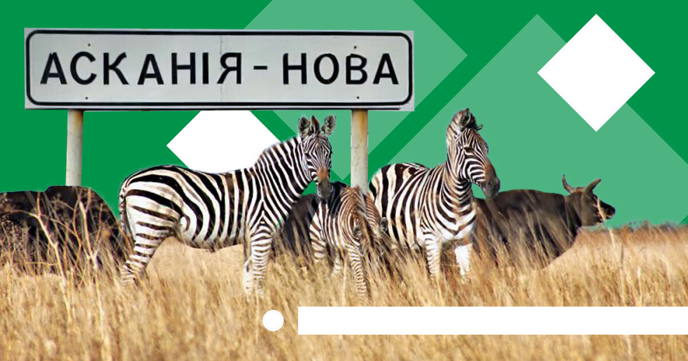
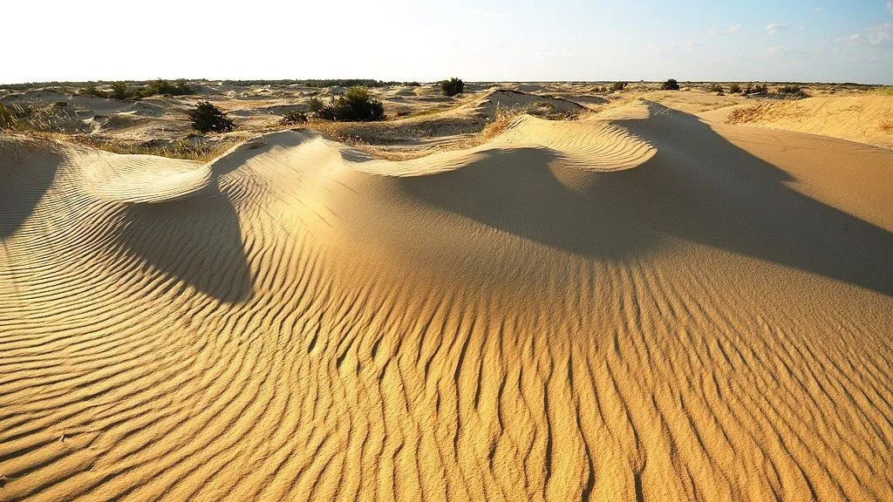
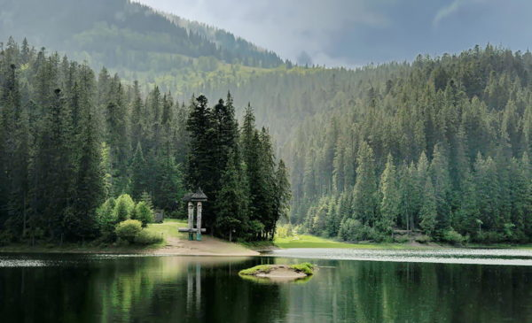
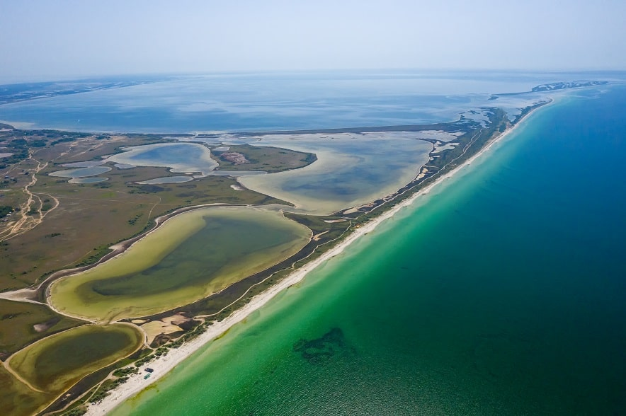
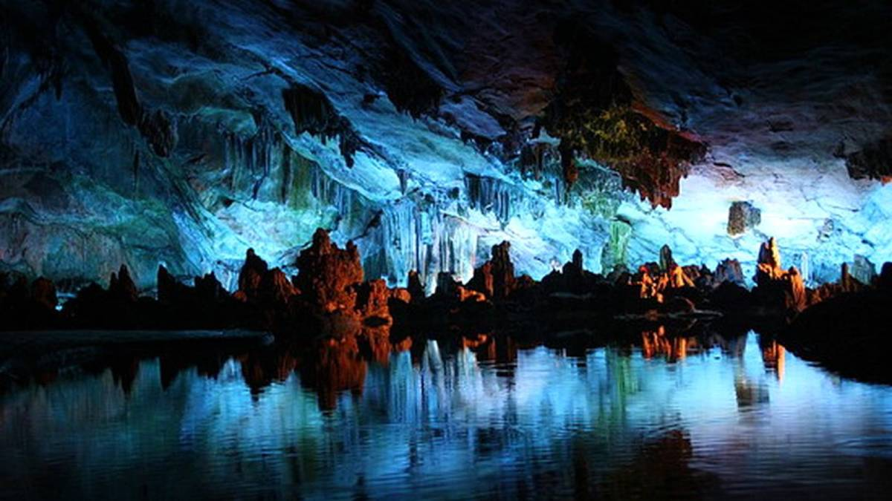
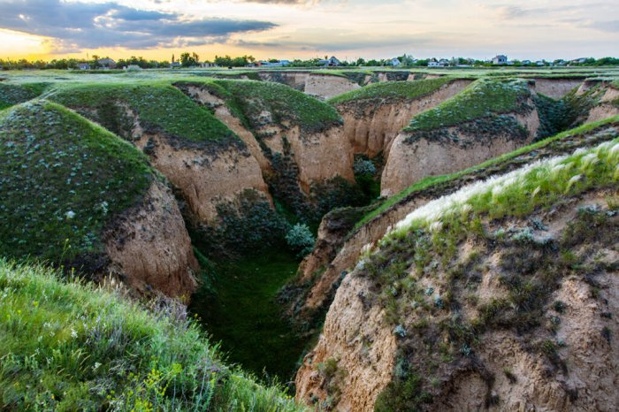
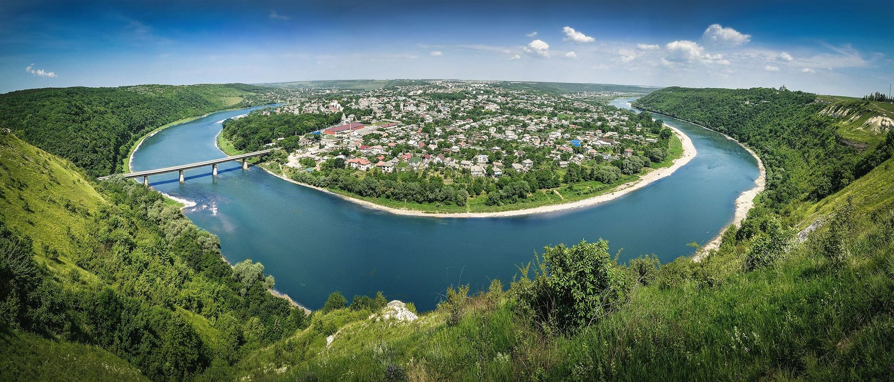
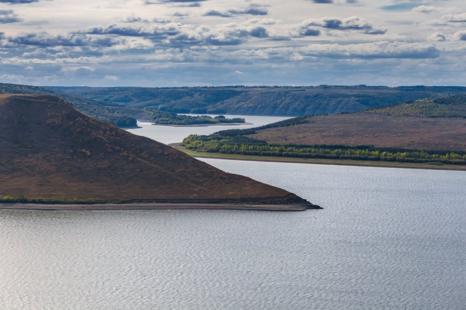
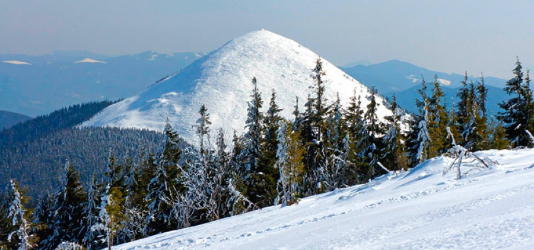
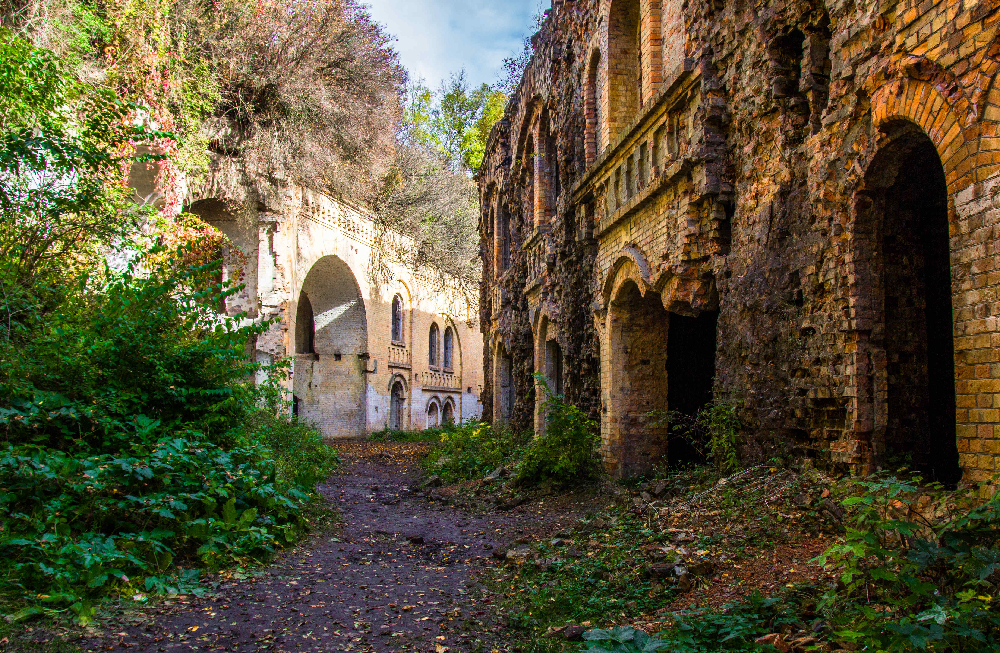

Найстаріший степовий резерват світу, одне з 7 природних чудес України, де мешкають зебри й антилопи, бізони та буйволи, олені та дикі коні. Всього на території перебуває 3000 видів тварин.
Піщаний масив, який дослідники називають напівпустелею. Це унікальна для півдня України природна зона, на якій можна побачити рідкісні види рослин та незвичайні для нашої країни пейзажі.
Найбільше за площею озеро України, яке оточене ялинами та горами. Неймовірно прекрасне місце!
Коса, яка простягається на декілька кілометрів, здивує красою природи. Тут можна побачити піщані масиви, хвойні ліси та соляні промисли.
Величезна печера, яка вражає своїми лабіринтами, сталактитами та невеличким озером всередині. В печері можна навіть заночувати, якщо ви любите екстрим.
Прибережна частина Дніпро-Бузького лиману, де замість звичного пісочного або галькового узбережжя на туристів чекають обривисті скелі.
Найдовший в Україні Дністровський каньйон захоплює одразу чотири області: Івано-Франківську, Хмельницьку, Чернівецьку та Тернопільську. Його довжина 250 км. Навколо річки є соснові та мішані ліси, природні заповідники та скелі девонського геологічного періоду, яким понад 400 мільйонів років.
Село Бакота у Хмельницькій області затопили під час будівництва Дністровської ГЕС. На його місці тепер неймовірно гарна Бакотська затока, яка стала улюбленим місцем для відпочинку багатьох українців. А ще археологічні розкопки свідчать, що на місці Бакоти раніше було багато язичницьких храмів та святилищ. Тож сюди ще приїжджають, щоб отримати особливу силу та енергію.
Карпати вже давно завоювали серця українців і не тільки. А їхньою окрасою та справжньою гордістю України вважається Говерла — найвища гора нашої держави. Її висота — 2060,8 м над рівнем моря. Після виснажливого підняття на вершину ти можеш відпочити в традиційних чанах, скуштувати банош та запити його карпатським домашнім вином. Схоже на ідеальний розпорядок дня, чи не так?
Тараканівський форт у Рівненській області знайти непросто, адже він схований за хащами. Та й не дивно, бо ж його будували як оборонну споруду на кордоні. Форт давно вже припинив своє функціонування та почав руйнуватись. Але тобі точно стане цікаво поблукати його руїнами. Лише не забудь захопити з собою ліхтарик!
